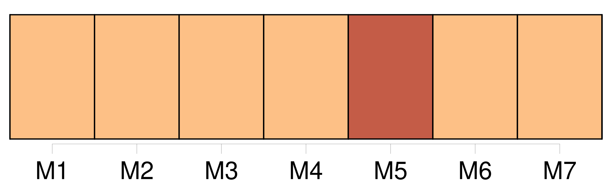
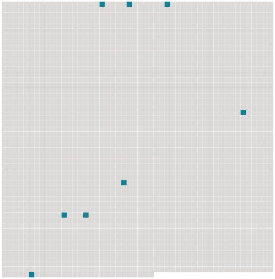

Longueur nb maillons : 8 mentions |
 |
Les ronces, aux ergots épineux, se croisaient d'un bord à l'autre des sentiers et [vous] accrochaient au passage pour [vous] empêcher d'aller plus loin et [vous] dérober ce mystère de tristesse et de désolation. [22 phrases] Au-dessus de la cheminée de forme antique, un massacre de cerf dix cors épanouissait son bois, et le long des murailles grimaçaient sur les toiles rembrunies des portraits enfumés représentant des capitaines cuirassés ayant leur casque à côté d'eux ou tenu par un page, et fixant sur [vous] des yeux profondément noirs seuls vivants dans leurs figures mortes ; des seigneurs en simarre de velours, la tête posée sur des rotondes roides d'empois comme des chefs de saint Jean-Baptiste sur des plats d'argent ; des douairières en costume à la vieille mode, effrayantes de lividité et prenant par la décomposition des couleurs, des apparences de stryges, de lamies et d'empouses. [14 phrases] Que ce mot tapisserie n'éveille en [votre] imagination aucune idée de luxe inopportun. [9 phrases] Quelquefois un ais de meuble craquait inopinément, comme si la solitude ennuyée étirait ses jointures, et [vous] causait, malgré [vous] , un tressaillement nerveux. [9 phrases] Dès le seuil, une odeur de relent, un parfum de moisissure et d'abandon, le froid humide et noir particulier aux lieux sombres, [vous] montaient aux narines comme lorsqu'on lève la pierre d'un caveau et qu'on se penche sur son obscurité glaciale. |
 |
Il est possible de télécharger la ressource sur la page Ortolang |
Si vous avez des questions ou vous voyez des erreurs, merci d'envoyer un mail à silvia.federzoni89@gmail.com |